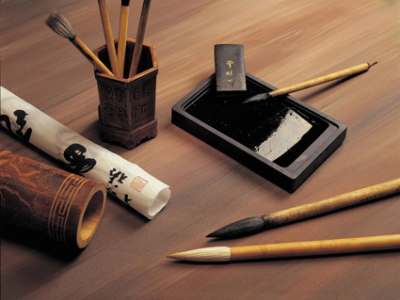

Characters in the system of Feng Shui is clearly directed towards human harmony with the world and himself. This in turn leads to improved life situation as a whole, the achievement of the objectives of harmonization of relations with colleagues and loved ones, protection against adverse events and influences that contribute to the material and spiritual growth.
Tools for writting:
- 1. paper;
- 2. brush;
- 3. ink;
- 4. inkstand.
 Latest archaeological studies suggest that the ancient oracle inscriptions on tortoise shells and ox-blades (Shang XVI - XI centuries BC) is initially applied with a brush, and only then skillfully cut with a knife. Thus we can say that the Chinese brush at least three thousand years. The highest quality ink for added flavor musk and cloves. As befits a cult subjects were treated with a special, almost divine reverence.
 In the age of rapid Internet word no longer keep up with the idea. The word is not write beautiful handwriting, following certain rules and
state of mind ... it mindlessly gaining on the keyboard. And when modern man begins to write something by hand "the old fashioned way", he
wonders what is quite unfamiliar with his own handwriting.
In the age of rapid Internet word no longer keep up with the idea. The word is not write beautiful handwriting, following certain rules and
state of mind ... it mindlessly gaining on the keyboard. And when modern man begins to write something by hand "the old fashioned way", he
wonders what is quite unfamiliar with his own handwriting.